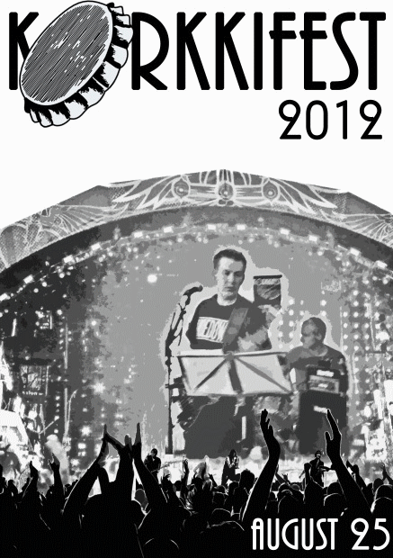
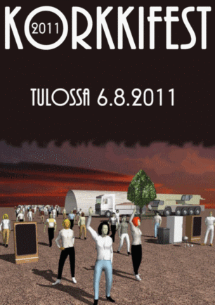

Perinteinen Korkkifest -tapahtuma järjestetään tänä vuonna lauantaina 25.8.2012. Lisätietoa esiintyjistä tulossa myöhemmin.
Tsekkaa esiintyvät bändit tästä.

Festaripaitojen tilaaminen on nyt mahdollista. Lue tilausohjeet täältä.
Korkkifestin päivämääräksi on lyöty lukkoon lauantai 6.8.2011. Esiintyviä bändejä on ruvettu jo varailemaan, esiintyjälista julkaistaan sivuilla myöhemmin.
